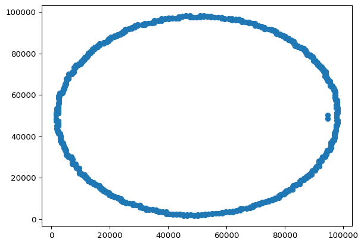
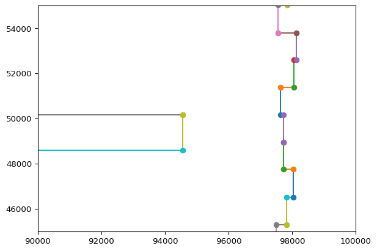

import numpy as np
import matplotlib.pyplot as plt
import random
with open('data-2025-09.txt', 'r') as f:
inp = f.read().splitlines()
tiles = [[int(x.split(',')[0]), int(x.split(',')[1])] for x in inp]2025 Day 9
— Day 9: Movie Theater —
There are some interesting tiles on a movie theater floor.
Using two red tiles as opposite corners, what is the largest area of any rectangle you can make?
Calculate all the combinations and record the maximum
maxim = 0
for i in tiles:
for j in tiles:
area = (max(i[0], j[0]) - min(i[0], j[0]) + 1) * \
(max(i[1], j[1]) - min(i[1], j[1]) + 1)
if area > maxim:
maxim = area
maxim4741451444— Part Two —
The area can only have red or green tiles, i.e. must contain other areas within it.
Using two red tiles as opposite corners, what is the largest area of any rectangle you can make using only red and green tiles?
I think we are going to have to create an array with these tiles, and then test things out. Can we be efficient with that? Maybe. dtype='i1' seems to be the smallest numpy array type.
Create a rectangle, and if the sum of all the cells inside equals the number of cells, then we have a valid rectangle.
recs = np.zeros((99999,99999), dtype='i1')
for e, t in enumerate(tiles[:10]):
recs[t[0], t[1]] = 1
s = tiles[e-1]
if s[0] == t[0]:
y = min(s[1], t[1])
z = max(s[1], t[1])
for k in range(y, z):
recs[t[0], k] = 1
else:
y = min(s[0], t[0])
z = max(s[0], t[0])
for k in range(y, z):
recs[k, t[1]] = 1
# 97633,51388 check for lines
recs[97630:97640, 51385:51392]array([[0, 0, 0, 0, 0, 0, 0],
[0, 0, 0, 0, 0, 0, 0],
[0, 0, 0, 0, 0, 0, 0],
[1, 1, 1, 1, 0, 0, 0],
[0, 0, 0, 1, 0, 0, 0],
[0, 0, 0, 1, 0, 0, 0],
[0, 0, 0, 1, 0, 0, 0],
[0, 0, 0, 1, 0, 0, 0],
[0, 0, 0, 1, 0, 0, 0],
[0, 0, 0, 1, 0, 0, 0]], dtype=int8)Prepare the inner parts
# for c in range(99999):
# for d in range(99999):
for c in range(97630, 97640):
for d in range(51385, 51392):
if recs[c,d] == 1:
pass # already one
elif (sum(recs[0:c, d]) % 2) == 1:
recs[c,d] = 1
elif (sum(recs[c:99999, d]) % 2) == 1:
recs[c,d] = 1
elif (sum(recs[c, 0:d]) % 2) == 1:
recs[c,d] = 1
elif (sum(recs[c, d:99999]) % 2) == 1:
recs[c,d] = 1
else:
pass
recs[97630:97640, 51385:51392]C:\Users\NathanMoore\AppData\Local\Temp\ipykernel_37144\2329989172.py:9: RuntimeWarning:
overflow encountered in scalar add
array([[1, 1, 1, 1, 1, 1, 1],
[1, 1, 1, 1, 1, 1, 1],
[1, 1, 1, 1, 1, 1, 1],
[1, 1, 1, 1, 1, 1, 1],
[1, 1, 1, 1, 1, 1, 1],
[1, 1, 1, 1, 1, 1, 1],
[1, 1, 1, 1, 1, 1, 1],
[1, 1, 1, 1, 1, 1, 1],
[1, 1, 1, 1, 1, 1, 1],
[1, 1, 1, 1, 1, 1, 1]], dtype=int8)This isn’t working, there should be ones and zeros?
Hint from Reddit: compress the coordinates. Let’s write a thing to see what the gaps are and if we can reduce the size of the grid. Check all the differences.
c1 = {}
c2 = {}
t0 = {}
t1 = {}
for e, t in enumerate(tiles):
# look at the tiles first
if t[0] in t0.keys():
t0[t[0]] += 1
else:
t0[t[0]] = 1
if t[1] in t1.keys():
t1[t[1]] += 1
else:
t1[t[1]] = 1
# compare this and the last
s = tiles[e-1]
if s[0] == t[0]:
# add to c2
cn = abs(s[1] - t[1])
if cn in c2.keys():
c2[cn] += 1
else:
c2[cn] = 1
else:
# add to c1
cn = abs(s[0] - t[0])
if cn in c1.keys():
c1[cn] += 1
else:
c1[cn] = 1
# c1
# c2
# t0
# t1Okay, there’s no consistency here that I can immediately see. I could just do the ins and outs by interval of one but let’s check other things.
x = [t[0] for t in tiles]
y = [t[1] for t in tiles]
plt.scatter(x, y)
ax = plt.gca()
plt.axis('auto')
plt.show()
xx = np.vstack([x[0:-1:1],x[1::1]])
yy = np.vstack([y[0:-1:1],y[1::1]])
plt.plot(xx,yy, '-o')
# plt.axis('auto')
ax = plt.gca()
# ax.set_xlim([0, 10000])
# ax.set_ylim([45000, 55000])
ax.set_xlim([90000, 100000])
ax.set_ylim([45000, 55000])
plt.show()
So, there’s a minimum limit for the y values, can we just put that in our loop for part one? Probably
The weird jump in the data:
94553,50158
94553,48602
We can have regions above or below the gap! Not above and below, and not to the right hand side of it. Obviously.
In fact, it’s only going to be above or below, so we only need to test < 48602 with each other and > 50158 with each other.
maxim = 0
for i in tiles:
for j in tiles:
if i[1] <= 48602 and j[1] <= 48602:
area = (max(i[0], j[0]) - min(i[0], j[0]) + 1) * \
(max(i[1], j[1]) - min(i[1], j[1]) + 1)
if area > maxim:
maxim = area
elif i[1] >= 50158 and j[1] >= 50158:
area = (max(i[0], j[0]) - min(i[0], j[0]) + 1) * \
(max(i[1], j[1]) - min(i[1], j[1]) + 1)
if area > maxim:
maxim = area
else:
# opposite sides of the divide
pass
maxim
# 73143488 too low
# 3078193230 too high3078193230Attempt 3: there are individual ins and outs around the place.
We could create a list of valid points by creating a new circle with simple up / down / left / right movements. Nah.
I think we can test if any points are in the square, and that means the square is not complete, and not valid.
https://www.reddit.com/r/adventofcode/comments/1ptp0pw/2025_day_9_part_2_help/
https://www.reddit.com/r/adventofcode/comments/1pkvkvs/2025_day_9_part_2_need_a_hint_for_part_2/
This suggests I’m on the right track but could make the code below a bit better.
maxim = 0
above = 50158
below = 48602
printer = False
# max 496
sample_num = 496
# max = 496**2 = 246016
rounds = 100000
def above_or_below(i1, j1):
if i1 <= below and j1 <= below:
return 'below'
elif i1 >= above and j1 >= above:
return 'above'
else:
return None
def calc_area(i, j):
x1, x2 = min(i[0], j[0]), max(i[0], j[0])
y1, y2 = min(i[1], j[1]), max(i[1], j[1])
if printer: print(x1, x2, y1, y2)
a = (x2 - x1 + 1) * (y2 - y1 + 1)
return a, [x1, x2, y1, y2]
def check_sample(ab):
samples = random.sample(tiles, sample_num)
if ab == 'above':
goodsample = [x for x in samples if x[1] > above]
else:
goodsample = [x for x in samples if x[1] < below]
# return
return goodsample
def valid_square(xy, ab):
# choose some random points to validate
samples = check_sample(ab)
# loop through if they are the same side
for k in samples:
if printer: print(k, xy)
# check if inside the square
if (xy[0] < k[0] < xy[1]) and (xy[2] < k[1] < xy[3]):
if printer: print('False')
return False
# if we make it through then
return True
#
# for k in range(rounds):
# if printer: print('round: ', str(k))
# # choose elements
# i = random.choice(tiles)
# j = random.choice(tiles)
# # weirdly get the same thing, skip this
# if i == j:
# if printer: print('same!')
# continue
# # we only want to check same side of the gap
# ab = above_or_below(i[1], j[1])
# if printer: print(ab)
# if ab:
# aa, xy = calc_area(i,j)
# if printer: print(aa)
# # if we have a larger area than before
# if aa > maxim:
# # if we have a valid square
# if valid_square(xy, ab):
# maxim = aa
for i in tiles:
for j in tiles:
if i == j:
if printer: print('same!')
continue
# we only want to check same side of the gap
ab = above_or_below(i[1], j[1])
if printer: print(ab)
if ab:
aa, xy = calc_area(i,j)
if printer: print(aa)
# if we have a larger area than before
if aa > maxim:
# if we have a valid square
if valid_square(xy, ab):
# print(aa)
maxim = aa
maxim
# 1366028560
# 1153416880
# 1366028560
# 1054417572
# 1366028560
# 15624596801562459680